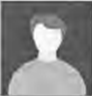

CURRÍCULUM VITAE
Datos Personales

Nombre: José Andrés Sánchez García
Fecha de nacimiento: 1975-02-07
Email: josg@gmail.com
Teléfono: 589 589 589
Formación
- Título1: Técnico superior en radiotelecomunicación
Lugar: Escuela Superior de Electrónica
Periodo: Fecha inicio - 1996-10-01 Fecha fin - 1997-06-30
- Título: Máster en dirección de empresas
Lugar: Escuela de Negocios Metropolitana
Periodo: Fecha inicio - 2000-01-10 Fecha fin - 2001-06-30
Experiencia Laboral
- Cargo: Inspector
Lugar: Policía
Periodo: Fecha inicio - 2004-02-14
- Cargo: radiotelegrafista
Lugar: aeropuerto
Periodo: Fecha inicio - 2003 Fecha fin - 2004-03-22
Idiomas
- Idioma: Castellano(lengua materna)
- Idioma: Inglés
Nivel(3-5)
- Expresión oral: 3
- Comprensión oral: 2
- Expresión escrita: 3
- Comprensión Escrita: 3
- Idioma: Francés
Nivel(3-5)
- Expresión oral: 2
- Comprensión oral: 2
- Expresión escrita: 3
- Comprensión Escrita: 3
Otras informaciones
- Liciencia de Conducción: B1
- Vehículo Propio
- Descripción Personal: Tímido, perfeccionista, polifacético